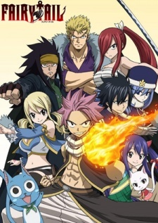

 Долгожданное продолжение истории о приключениях Люси, Натсу и самой безбашенной гильдии Фиора — "Fairy tail" от Хиро Машимы.
Великие магические игры продолжаются, и финал уже так близок! Кто же получит главный приз и звание сильнейшей гильдии? Какое отношение к играм имеют драконы? Что задумали королевские войска Фиора, и как с этим связаны заклинатели духов? Новые приключения, герои и коварные злодеи — это и многое другое вы увидите в новом сезоне Fairy tail!